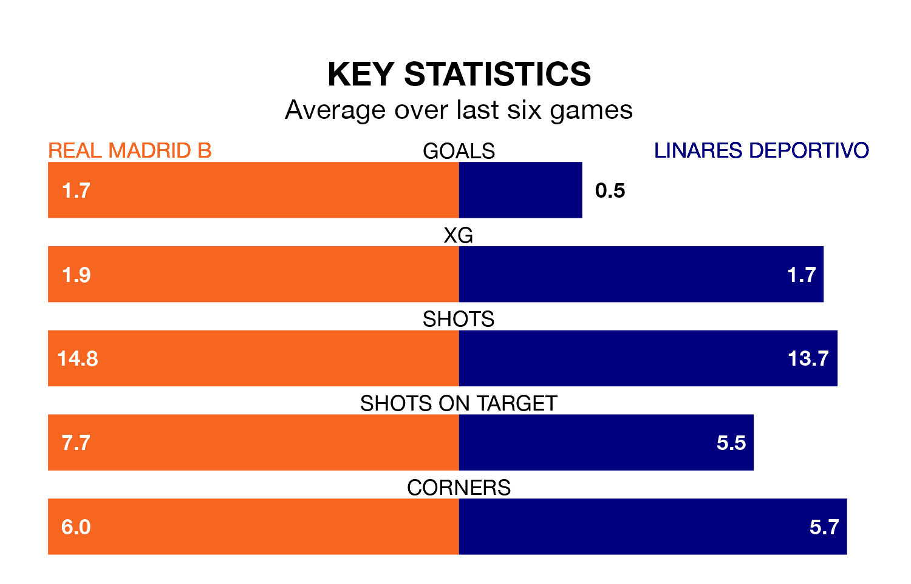

Real Madrid B are heavy favourites to keep all three points at home in Sunday's late kick-off against Linares Deportivo.
Madrid B, who sit 10th in Primera Division RFEF Group 2 with 20 games played, are priced at 1.6 to seal victory at the Estadio Alfredo Di Stéfano.
Sitting six places and 10 points behind them in the table, Linares Deportivo are 5.4 to win with *Betting Company*, while the draw is at 3.1.
With 14 goals in 20 games so far this season, Linares Deportivo are scoring at below the league average rate with 0.7 goals per game. And they are conceding more than average, letting in 30 goals at a rate of 1.5 per game.
Madrid B, meanwhile, are above average scorers, with 1.4 goals per game, compared to a league average of 1.2. They have conceded 1.2 goals per game.
The home team are in mixed form in Primera Division RFEF Group 2, with two wins and three draws from their last six games.
With a win and a draw over that period, the visitors' form is worse – they have taken four points from 18, compared to Madrid B's nine.
In the last five years, Madrid B and Linares Deportivo have played each other on five occasions. Madrid B won three of them and Linares Deportivo two.
On average, Madrid B scored 1.8 goals and Linares Deportivo 0.8 in those matches.
Their last meeting was on September 9, when Linares Deportivo won 2-1 at home.
Madrid B's last match was on January 20, a 2-1 loss against Atlético Sanluqueño CF.
Linares Deportivo beat Mérida AD 2-0 last time out, also on January 20, with Samuel Corral Valero on the scoresheet.
Updated: 09:18 (UTC), 23/01/24